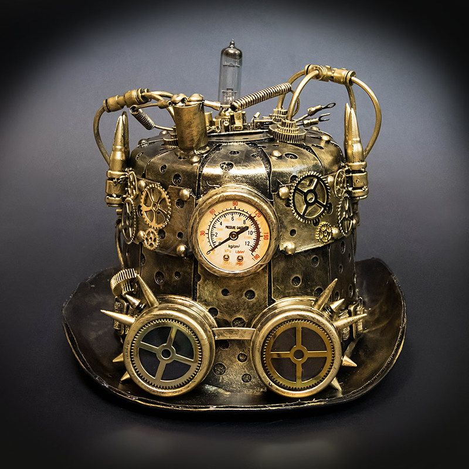
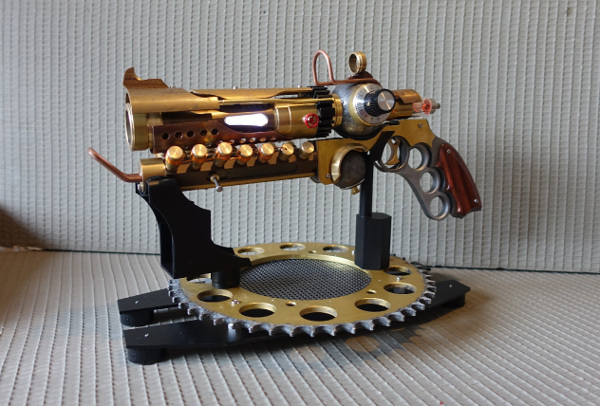

황금태옆과 기술의 상징
스팀펑크

스팀펑크(steampunk)란 SF, 더 좁게는 대체 역사물의 하위 장르 중 하나를 지칭한다.
20세기 산업 발전의 바탕이 되는 기술(예: 내연기관, 전기 동력) 대신, 증기기관과 같은 과거 기술이 크게 발달한 가상의 과거, 또는 그런 과거에서 발전한
가상의 현재나 미래를 배경으로 한다. 가상현실, 사이보그와 같은 전자·정보 기술의 영향으로 변모되는 미래를 묘사한
사이버펑크(cyberpunk)에서 사이버(cyber) 대신 증기기관의 증기(steam)를 합쳐서 만들어졌다.
.
1980년대부터 유행하기 시작했으며 19세기 빅토리아 시대의 영국과 유럽을 배경으로 하거나 증기기관에 의한 산업혁명시기를 다룬 것이 많다.
SF 평론가이자 번역가인 김상훈에 의하면
기존 과학소설의 건설적인 해체를 지향하던 사이버펑크 소설의 방향성을 시간축에 적용한 일종의 대체역사소설이라고도 할 수 있다.
.

스팀펑크라는 용어를 처음 쓴 사람은 미국의 과학소설 작가인 K. W. 지터이다.
지터는 당시의 과학소설계를 휩쓴 사이버펑크 운동에 빗대어
"컴퓨터 대신 증기기관이 등장하는 우리 소설은 스팀펑크라고 불러야 한다"라는 농담을 했다.